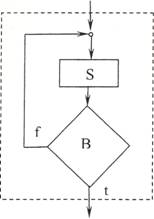

Алгоритмите в сайта са описани на псевдокод, което ги прави по-лесни за четене и разбиране.
УЕБ БАЗИРАНО ПРИЛОЖЕНИЕ ПО
СИНТЕЗ И АНАЛИЗ НА АЛГОРИТМИ
Алгоритми, изисквания, описание
Алгоритъм е основно понятие в информатиката. Алгоритмите са идеите, които стоят зад всяка компютърна програма. За да можем да обсъждаме различните аспекти, свързани с алгоритмите, ще въведем следното работно определение за алгоритъм.
Алгоритъм е крайна последователност от добре дефинирани крайни инструкции, която изисква крайно време и крайна памет за изпълнението си.
Важно е да се разбере, че алгоритъмът решава обща задача, а не отделен случай на задача. Разликата между задача и отделен случай на задача може да се види от следния пример. Една често срещана алгоритмична задача за сортиране се дефинира така:
Вход: Зададена е редица от п числа а1,а2,...,аn.
Изход: Да се намери пермутация а'1,а'2,...,а'n на тези числа, така че а'1<а'2<...<а'n.
Алгоритъмът за решение на тази задача трябва да може да приеме всяка възможна редица от п числа и да я трансформира в желаната изходна редица, в която елементите й са подредени във възходящ ред. Отделен случай на тази задача е да се сортира редицата {54,32,3,121,5,86,28}.
Много често първоначалната формулировка на задачата е твърде неясна. Преди да пристъпим към създаването на алгоритъм за решаването й, задачата трябва да е формализирана. Ако отделни елементи на задачата могат да се изразят в термините на някакъв формален модел, то много е възможно да се установи, че вече съществуват методи и алгоритми за решаването им.
Например, да разгледаме неформалната задача, стояща пред някой, който иска да си определи маршрут, по който да пътува от София до Уелингтон, Нова Зеландия. Съвременният свят предлага множество самолетни превозвачи, някои с редовни линии, други са т.нар. нискотарифни превозвачи, някои са с директни полети, други са с множество престои и прекачвания. Пътникът може да има различни предпочитания, но много е възможно да иска да подбере най-евтиния маршрут.
За построяването на формализиран модел на тази задача може да използваме математическата структура граф. Графът се състои от множество точки, наречени възли, и множество линии, наречени ребра, съединяващи възлите. За решението на задачата може да скицираме граф, на който възлите са отделните летища, а ребрата свързват онези възли, между които има полети на някой от операторите превозвачи. Цените на отделните полети сij от летище i до летище j могат да се зададат чрез една квадратна матрица С = {с|ij}. Всяка последователност от възли, свързани с ребра, която започва от възела София и стига до възела Уелингтон, се нарича път в графа между София и Уелингтон. Сумата от цените на ребрата от пътя е цената на този път. Така първоначалната неформална задача на пътника придоби съвсем формализиран вид и се свежда до математическата задача: да се намери най-евтин път между два възела в граф.
Нещо повече (както ще се случва често, ако успеем да формализираме решаваната задача), ще открием, че има разработени методи и алгоритми за решаване на формализираната задача за намиране на най-евтин път в граф.
Този пример показва, че за да построи правилен, ефективен и реализуем алгоритъм, разработчикът трябва да има определени знания. Тези знания могат да се резюмират така:
- Да познава и разбира няколко фундаментални техники за построяване на алгоритми, като метод разделяй и владей, динамично програмиране, пълно претърсване с възврат, евристики, рекурсия, и може би най-важната техника - тази на моделирането. Това е изкуството да се преобразува неясната в голяма степен реална задача в добре формализиран неин модел;
- Да познава и използва основните структури от данни;
- Да умее да се възползва от създаденото преди него: вместо да се захваща с разработката на всяка задача отначало, да знае как да открие какво е известно за нейното решение. Това показва, че разработчикът трябва да е запознат с едно множество от алгоритмични задачи, например като тези за сортиране, търсене, комбинаторни алгоритми, които осигуряват материал за моделиране на повечето приложения.
Описание на алгоритмите
Описанието на алгоритъм изисква средство за изразяване на последователността от стъпки, които трябва да се изпълнят. Най-общите средства за описание са: естествен език, псевдокод и формализиран език за програмиране. Естественият език е най-лек за ползване, но и най-неточен, тъй като не е строго формализиран и допуска двусмислие. Езиците за програмиране като Pascal и С са точни, но са по-трудни за писане и разбиране. Псевдокодът е полезен, защото е по средата. Той има формализирани управляващи структури, подобно на език за програмиране, но допуска описание на отделни стъпки със средствата на естествен език. Точно тези свойства на псевдокода позволяват постъпковото разработване на един алгоритъм, както ще видим малко по-долу.
Изисквания към алгоритмите
Естествено е да искаме един алгоритъм да решава правилно поставената задача. Усилията да се докаже, че един алгоритъм е правилен са съпоставими с тези да се докаже теорема, така че да се установи, че за всеки отделен случай на входни данни алгоритъмът води към желания резултат. Тук няма да се съсредоточаваме във формални доказателства за правилност на разработваните алгоритми. Все пак да обърнем внимание, че освен в случаите на много прости задачи, не винаги е очевидно, че даден алгоритъм е правилен. За да покажем това, да разгледаме следната задача:
Задача на търговския пътник
Вход: Зададено е множество Р от п населени пункта. Търговският пътник трябва, тръгвайки от начален пункт р , да посети всеки пункт по веднъж и да се
върне в отправния пункт.
Изход: Да се определи най-късият цикъл, който обхожда всички пунктове. Могат да бъдат предложени различни алгоритми. Може би най-простата идея е, започвайки от р , на всяка стъпка да се избира най-близкия съсед.
Описанието на псевдокод на тази идея изглежда така:
Алгоритъм TSP1(P)
Избери начален пункт р0Р;
i := 0;
докато има непосетени пунктове прави
i:=i+1;
избери рi= най-близкия съсед на pi-1;
посети pi;
върни се от рi-1 в р0.
Този алгоритъм е прост за разбиране и реализация. Но дали е правилен? Наистина, горният алгоритъм ще даде верен резултат, ако точките от множеството Р са разположени като на фиг. 1.
Фиг. 1. Най-къс цикъл на обхождане на множеството Р.
Но докато доказателството за правилност изисква да се покаже, че алгоритъмът дава желания резултат при всеки възможен вход, то да се докаже, че един алгоритъм (и теорема) не е правилен, достатъчно е да се намери един контрапример. Същият алгоритъм за множеството Р, показано на фиг.2, ще даде съвсем погрешен резултат [1], ако търговският пътник тръгне от точката, отбелязана с 0. Числата на фигурата съответстват на разстоянията в дясно и лявоот точката 0. Следвайки описания алгоритъм, търговският пътник ще прескг надясно и наляво през пункта, от който е тръгнал. Така ще измине път с дължи 93.6 единици.
Фиг.2. Контрапример на идеята за най-близкия съсед
За същата конфигурация Р от фиг.2, пътят показан на фиг.З е значително по-къc (72.0). Всъщност той е и оптималният.
Фиг.З. Най-късият път за конфигурацията от фиг.2.
Описанието на един алгоритъм служи не само за това той да се изпълни от компютър. Често описанията, особено на псевдокод, служат за обмен на идеи между хората. Поради това описанието на един алгоритъм трябва да е леко за четене. Методите за решение на дадена формализирана задача постоянно се развиват и усъвършенстват. Поради това, един алгоритъм трябва да е разработен така, че да подлежи на модификация на онези негови елементи, за които са създадени нови методи.
Структурно програмиране
Един подход, който помага в голяма степен да се разработи правилен, лек за четене и удобен за модификация алгоритъм, е този на структурното програмиране. Структурното програмиране може да се разглежда като средство на процедурното програмиране, една от основните програмни парадигми (концептуални модели), наред с обектно-ориентираното, функционалното или логическото програмиране.
В основата на структурното програмиране стои една теорема, която се свързва с имената на Böhm и Jacopini. Тя гласи: три управляващи структури - последователност, избор на алтернатива и итерация - са достатъчни за описаниетo на кой да е алгоритъм. Тук явно не се споменава управляващата структура преход (go to) и структурното програмиране е известно още като програмиране без go to.
Сега със средствата на блок-схемите от една страна и съответстващите им записи на псевдокод от друга, ще представим всяка една от тези управляващи структури.
Последователност
...; S1; S2; .
Тук под S1,S2 имаме предвид по-общо или по-детайлно описание на изчислението на някаква функция. Затова такъв правоъгълник, който характеризира с един вход и един изход, се нарича функционален блок.
ако В, то S1;
иначе S2;
Избор на алтернатива
Действието на тази структура е известно: изчислява се условието В и според това дали е изпълнено (случай t, true) или не е (случай f, false) се изпълнява или функционален блок S1, или функционален блок S2 съответно. В записа на псевдокод са въведени "служебни думи": ако, то. иначе с ясен смисъл и като разделители между условието и двата функционални блока. Важно е да се отбележи, че вместо усложняване на записа със служебни думи за начало (begin) и кРай (cud), двете отделни клаузи, за истина и лъжа, се записват с отстъп надясно зад една вертикална черта. Така е видно докъде се простират клаузите истина и лъжа. Също така е важно да отбележим смисъла на пунктирната линия в блок- схемата: конструкция избор на алтернатива може да се разглежда като функционален блок с един вход и един изход.
Често се използва и кратката форма на избор в ситуацияр когато действие се предприема само в случай на истина на условието В.
ако B, то S;
Относно итерациятя е уместно разглеждането на два типа итеративни повторения: итеративен цикъл с предусловие и такъв с постусловие.
Итеративен цикъл с предусловие
докатоB прави S;
Тук условието В за това дали се повтаря тялото на цикъла S се проверява на входа. Поради това е възможно тялото да не се изпълни нито веднъж.
Итеративен цикъл с постусловие

повтаряй S;
докато В;
Тук безусловно се влиза в тялото на цикъла и едва след първото му изпълнение се проверява дали да се повтаря изпълнението му.
И двата цикъла могат да се разглеждат като функционални блокове с един вход и един изход.
Един частен случай на цикъл с предусловие, който се използва, когато предварително е известен броят повторения на тялото, е цикъл с изброяване (for) за ieP прави 5; '
което означава, че за стойности на управляващата променлива на цикъла i от едно известно множество Р се повтаря изпълнението на тялото S.
Както отбелязахме по-горе, тези управляващи структури са достатъчни за описанието на кой да е алгоритъм. Полезно е обаче добавянето на още една структура: избор на една от много възможности, която иначе може да бъде реализирана с поредица структури ако то иначе:
Структура превключвател:
Вариант от i
1: S1;
2:S2;
....
n: Sn;
Съществено е, че и тази структура може да се разглежда като функционален блок с един вход и един изход.
Използване на goto
Както отбелязахме, структурното програмиране е известно като програмиране без използван на преход. Това обаче не следва да се възприема като догма. Понякога е полезно използването на преход, например за принудително напускане на тялото на цикъл при достигане на условие, което не може да бъде изчислено преди входа в цикъла. Следният алгоритъм за двоично търсене илюстрира това, за да се избегне излишното повторение на тялото, ако елементът с ключ х е открит.
i;=1;j;=n;
докатo i<=j прави
m:=(i=j)/2;
акоA[m]=x то
преход към found;
акоx> A[m] то
i:=m;
иначе
j:=m;
found:
Разбира се, същият алгоритъм, с допълнителни средства, може да се опише и без преход.
flag:=false; i:=l;j:=n;
докато i<=j and not flag прави
m:=(i+j)/2;
ако A[m]=x то
flag: =true;
иначе
ако x> A[m] то
i:=m;
иначе
j:=m;
Така обаче алгоритъмът става по-дълъг и трябва да се обяснява смисълът на булевата променлива flag
Изброените управляващи структури се характеризират с основно свойство - един вход и един изход и още се наричат структурни блок схеми. Алгоритъм, който е разработен с използване само на структурни блок-схеми и самият има един вход и един изход, се нарича структурен алгоритъм.
Това свойство на структурните алгоритми се използва от основния метод в структурното програмиране - програмиране отгоре-надолу (top-down). Същността на този метод се състои в разработка на алгоритъма на стъпки, като на всяка стъпка един функционален блок се заменя с по-детайлна структура. Детайлизацията на всяка стъпка се извършва с използване само на структурни блок-схеми. Детайлизацията продължава дотогава, докато се достигне ниво, по което за алгоритъма може да се напише програма.
Например да разработим алгоритъм, който реализира функцията f. Нека тази функция може да се разложи на композиция от други две функции g и h, т.е. f(d) = g(h(d)). Функцията f ще бъде правилно реализирана, ако се реализират правилно функциите g и h.

Нека сега съсредоточим вниманието си върху една от функциите, например g. Да приемем, че тя може да се реализира със следната структура
Тогава, ако алгоритмите α и β саправилно построени, следва правилната реализация и на g. Следователно структурното програмиране отгоре-надолу се състои в това: на всяка стъпка да се пита може ли функцията, представена с даден блок, да се декомпозира, т.е. да се представи като композиция на други две или повече по-прости функции, чиято реализация е със структурни блок-схеми. При тази декомпозиция се заменя един функционален блок с по-детайлна схема, която пак има един вход и един изход. Ясно е защо структурното програмиране ползва само структурни блок-схеми.
Фиг.4. Труден за четене и модификация алгоритъм във вид на спагети
Какви са предимствата на структурното програмиране:
- на всяка стъпка на детайлизация съсредоточаваме вниманието си само върху един функционален блок; правилната му замяна с по- детайлна схема в голяма степен гарантира правилността на целия алгоритъм;
- един алгоритъм, съставен по този начин, се чете леко, тъй като има дървовидна структура (фиг.З), а не такава на граф с множество цикли, или както се казва, вид на спагети (фиг.4);
- в голяма степен се гарантира правилността на съставения алгоритъм; ако на поредната стъпка на детайлизация се покаже, че g правилно се декомпозира чрез показаната по-горе структура и а и /? са правилно построени, то е правилна и замяната на g чрез тази структура;
- по-лесно се осъществява модификация; ако трябва да се модифицира g, заменя се само онзи функционален блок, който я реализира, без това да се отразява на останалата част на алгоритъма.